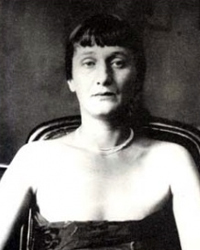

Анна Ахматова
Роки життя: 1889− 1966
Читати:
«Реквієм»
Ахматова у своїй витонченій, сповненій стриманої щирості ліриці з лише їй притаманною інтонацією відобразила надзвичайно широкий діапазон людських почуттів і переживань. Анна Ахматова народилася у дачному передмісті Одеси в сім'ї морського інженера-механіка, капітана 2-го рангу Андрія Антоновича Горенка, та Інни Еразмівни, до заміжжя — Стогової. Дитячі роки майбутня поетеса провела в Царському Селі, куди переїхала сім'я Горенків у 1891 р. У 1900 р. вона вступила у Царськосельську Марийську гімназію («Мої перші спогади — царськосельські: зелена, сира розкіш парків, вигін, куди мене водила няня, іподром, де гарцювали маленькі строкаті лошата, старий вокзал...»). Після розлучення з чоловіком матір забрала дітей і переїхала спочатку в Крим, а з 1906 р. замешкала в родичів у Києві. У 1907 р. Ахматова вступила в останній клас київської Фундукліївської гімназії, відтак навчалася на юридичному відділенні Вищих київських жіночих курсів. Після одруження з видатним російським поетом-акмеїстом М. Гумільовим (вінчання відбулося 15 квітня 1910 р. в Нікольській церкві села Нікольська Слобідка, що поблизу Києва) Ахматова стала студенткою Вищих історико-літературних жіночих курсів у Петербурзі. Саме в цьому місті проминуло майже все її життя. У 1910 та 1911 роках Ахматова разом із чоловіком двічі побувала у Парижі, а в 1912 р. — в Італії. У цьому ж році в них народився син Лев Гумільов — майбутній відомий історик і географ.
Публікуватися Ахматова почала з 1907 р. (вірш «На руці твоїй... «у паризькому російському щотижневику «Сіріус»), пов'язавши свою ранню творчість з акмеїзмом. «Одні йшли у футуризм, інші — в акмеїзм. Разом з моїми товаришами — Мандельштамом, Зенкевичем і Нарбутом — я стала акмеїсткою», — згадувала пізніше Ахматова. У своїй ранній ліриці поетеса, творчо сприйнявши на-бутки символізму, відмовилася від символістської містики та абстрактності, намагаючись передавати земний характер почуттів.
Перша збірка Ахматової «Вечір» («Вечер») вийшла друком на початку березня 1912 р. у видавництві «Цех поетів» накладом 300 прим. За своїм змістовим наповненням «Вечір» — це своєрідний поетичний щоденник, у якому наявна, як зауважив у передмові до збірки М. Кузмін, гостра сприйнятливість і прийняття світу в його сонячній плоті, а також внутрішня трагедійність свідомості. У книгу увійшло 46 віршів, написаних, в основному, у 1910-1911 pp.
Друга поетична збірка Ахматової — «Вервиця» («Чётки»), яка з'явилася через два роки після «Вечора», принесла їй всеросійську славу і висунула у перші ряди сучасної російської поезії. З-поміж численних критичних відгуків на збірку найглибшою і найпроникливішою Ахматова вважала статтю М. Недоброво, котрий підмітив у поезії «Вервиці» «ліричну душу швидше жорстку, ніж надто м'яку, швидше жорстоку, ніж слізливу, і вже відверто пануючу, а не пригноблену».
Ранній період творчості Ахматової завершила поетична книга «Біла зграя»(«Белая стая», 1917), позначена глибокими роздумами ліричної героїні про тривожну крихкість і непевність сучасного світу. Намагаючись вивищитися над проминущим і повсякденним, наблизитися до глибоких психологічних та етичних узагальнень, Ахматова мимовільно чи свідомо виходить за межі декларованих акмеїстами конкретності та відчутності, речевості образів і мовної простоти. Це, в першу чергу, пояснюється особливостями її світосприйняття крізь призму людської душі. Натомість теми нерозділеного та втраченого кохання, що домінувала у перших двох збірках, прийшла інша тема — тема всеперемагаючого і зцілюючого кохання («Твій білий дім і тихий сад лишаю...», «Відповідь», «Ні, царевич, я не та...», «Любому»). Водночас поетеса по-новому осмислює тему батьківщини та війни, пам'яті та совісті («Усамітнення», «Все забрано: і сила, і любов...», «Липень 1914», «Молитва», «Пам'яті 19 липня 1914»). До визначальних характерологічних ознак поетичної манери Ахматової слід віднести філігранне нюансування почуттів, епіграматичність і рефлексійність, а також сюжетність її ліричних мініатюр.
У квітні 1918 р. Ахматова розлучилася з М. Гумільовим. Отримавши офіційні документи про розлучення, восени цього самого року вийшла заміж за друга М. Гумільова В, Шилейко, вченого-ассирієзнавця і фахівця з клинописних мов. Покинути революційну Росію Ахматова відмовилася, сприйнявши революцію як неминучу розплату за гріховність і свого життя, і життя свого покоління.
Внутрішній конфлікт поетеси з дійсністю, неприйняття і заперечення більшовицької сваволі відобразилися у збірках «Подорожник» («Подорожник», 1921) та «Anno Domini»(1921), після чого до середини 30-х pp. настало вимушене мовчання. Саме у 1920-х pp. життєва доля Ахматової набула трагічного забарвлення. У серпні 1921 р. більшовики заарештували і без суду розстріляли М. Гумільова, брехливо звинувативши у контрреволюційній змові. У 1925 р. Ахматову виключили з ленінградського відділення Всеросійської Спілки письменників як «непролетарського поета», звинувативши у «декадентських настроях» і «відриві від соціалістичного виробництва». У 1934 р. на очах Ахматової заарештували О. Мандельштама, а наступного року потрапили у в'язницю її син Лев Гумільов і третій чоловік — М. Пунін, мистецтвознавець і музейний працівник. Лев Гумільов переживе ще 2 арешти і проведе у таборах 14 років.
Восени 1935 р. Ахматова розпочала роботу над знаменитою поемою-циклом «Реквієм» («Реквием»), у якій трагічні події особистого життя нерозривно переплелися з великою народною трагедією, значною мірою завдяки оригінальній поетичній формі, «близькій до народних голосінь» (О. Павловський):
У такому горі никнуть гори.
Кам'яніє тікищем ріка.
Незворушні лиш в'язниць затвори,
Поза ними «каторжанські нори»
І журба, як смерть, гірка.
(Пер. В. Затуливітра)
Ця пристрасна поліфонічна розповідь про мученицьку долю свого народу («... і в смерті спасенній боюсь // Забути про гуркіт зловісних «марусь», // Про двері, розчахнуті нагло у двір, // Про жінку, що вила, мов ранений звір») була вперше опублікована окремим виданням у Мюнхені в 1963 р. У Росії поема «Реквієм» вийшла друком лише у 1987 p., хоча основна частина тексту поеми-циклу (пролог, десять окремих фрагментів та епілог) створювалися з осені 1935 до весни 1940 р.
З початком Другої світової війни Ахматову евакуювали спочатку в Москву, а потім — у Ташкент, де вона жила до 1944 року. В роки війни вона створила яскравий цикл патріотичних віршів («Клятва», «Мужність», «Nоx. Статуя», «Ніч у Літнім саду «та ін.). Після повернення в Ленінград поетеса опублікувала ряд віршів у журналах «Ленинград» і «Звезда», а незабаром розпочалася чергова кампанія проти «антирадянських» творів Ахматової. 14 серпня 1946 р. у пресі з'явилася горезвісна постанова ЦК ВКП(б) «Про журнали «Звезда» та «Ленинград», у якій «ідеологічно чужа» творчість поетеси була піддана анафемі. «Тематика Ахматової наскрізь індивідуалістична, — проголошував у своїй доповіді тодішній партійний ідеолог О. Жданов. — До вбозтва обмежений діапазон її поезії, — поезії оскаженілої панійки, яка метається поміж будуаром і молитовнею. Основне у неї — це любовно-еротичні мотиви, переплетені з мотивами суму, туги, смерті, містики, приреченості... Чи то черниця, чи то блудниця, а вірніше, блудниця та черниця, в якої блуд змішаний із молитвою». Президія правління Спілки письменників СРСР 7 вересня 1946 р. ухвалила рішення про виключення Анни Ахматової з лав письменницької організації. Після цієї постанови Ахматова замовчала, хоча й продовжувала писати «у шухляду». В цей час вона укладала збірки власних віршів, не сподіваючись на те, що вони вийдуть друком. До безумовних шедеврів її лірики цього періоду належать «У спогадів є три епохи...», «Сон», «Ізнову осінь суне Тамерланом...», «Вервиця чотиривіршів «тощо.
Визначним літературно-художнім набутком тогочасної російської поезії стала «Поема без героя», у якій відображена не тільки цілюща атмосфера минулої «срібної епохи», а й невідворотний рух часу, пропущені через совість ліричної героїні; «плани минулого, теперішнього та майбутнього постійно перетинаються, епоха відображається у дзеркалі душі («Я пишу дзеркальним письмом... «), а душа бачить своє відображення в епосі» (В. Коровін). Своєрідним підсумком повоєнної лірики Ахматової стала збірка «Біг часу» («Бег времени», 1965).
Наприкінці життя до Ахматової прийшло світове визнання. У 1964 р. в Римі їй була присуджена Міжнародна літературна премія «Етна-Таорміна» з нагоди 50-ліття літературної діяльності та за книгу вибраних творів, видану в Італії. Цього ж року, 15 грудня, Оксфордський університет (Англія) присудив Ахматовій ступінь почесного доктора літератури.
Переживши чотири інфаркти, Ахматова померла 5 березня 1966 року у підмосковному Домодедово, в кардіологічному санаторії. Поховали поетесу на Комаровському кладовищі, що поблизу Ленінграда